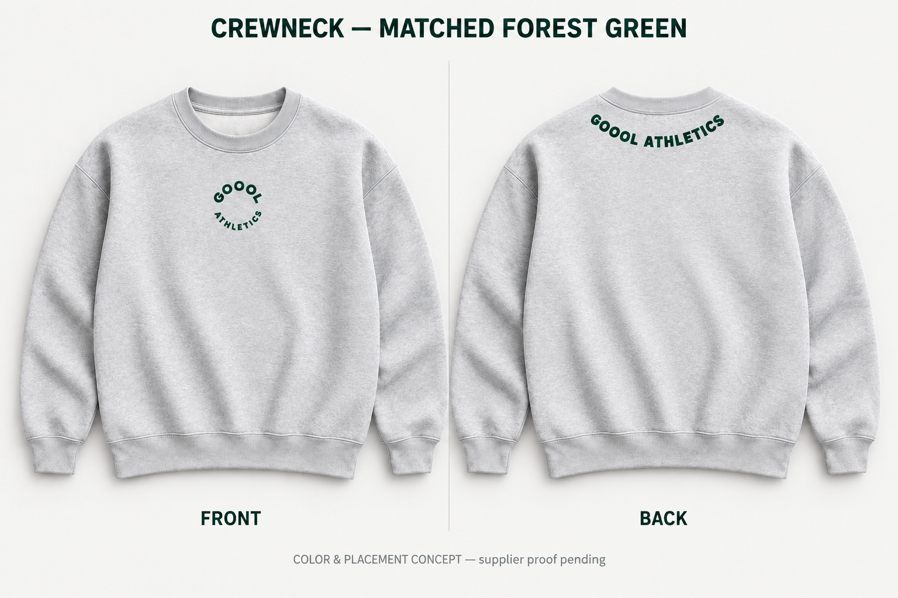
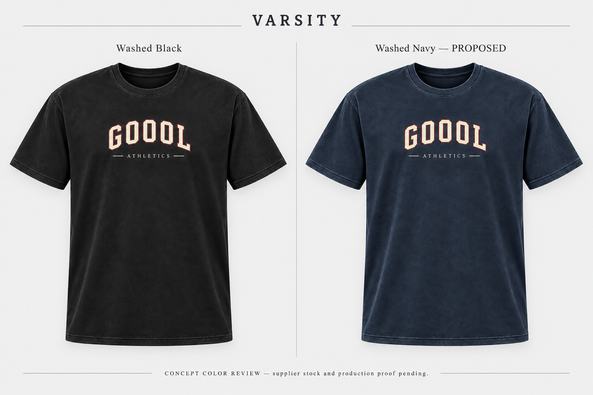
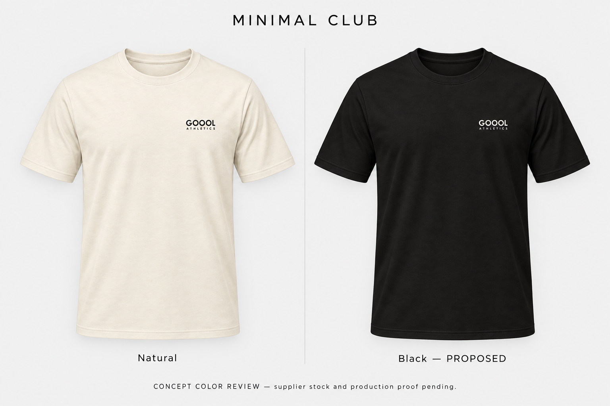
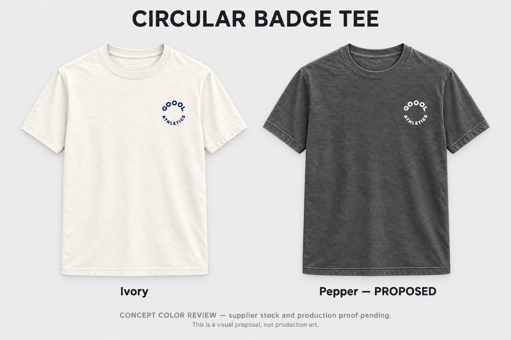
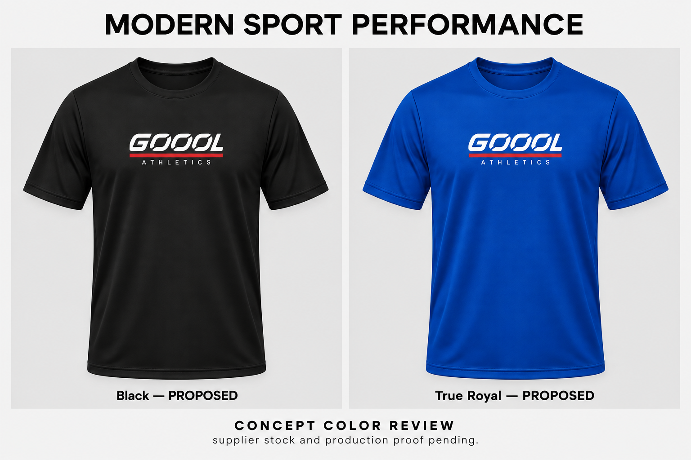
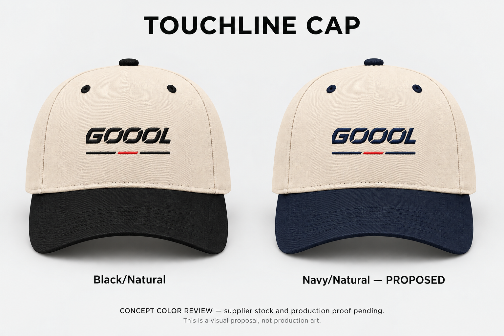

GOOOL · Current design review
Six proposed second colors. Cotton Modern Sport is archived. Crewneck v4 matches front/back forest-green lettering along the collar curve; performance v2 corrects sleeve construction. Supplier proofs and owner design review remain pending.
Circular Center Crewneck
Athletic Heather color-match review · Natural remains proposed · AS Colour 5150

Latest owner correction: the back matches the front forest green and rounded upright badge letters, arranged GOOOL ATHLETICS on the collar curve. Both production faces must use #0A371E. V4 supersedes v3 color review. Natural remains a color proposal.
Varsity tee
Washed Navy proposed · Bella+Canvas 4810GD

Cream letters, burgundy outline and existing artwork unchanged.
Minimal Club tee
Black proposed · Bella+Canvas 3010

Proposed black color uses off-white ink for contrast. Existing large back artwork must receive matching contrast treatment in its later production proof.
Circular Badge tee
Pepper proposed · Comfort Colors C1717

Proposed Pepper uses ivory circular left-chest artwork. Blank back retained.
Modern Sport Performance tee
True Royal proposed · Sport-Tek ST720

Set-in sleeve construction corrected to ST720. Previous raglan concept rejected as construction evidence.
Touchline Cap
Navy/Natural proposed · OTTO 31-069

Proposed navy thread replaces black wordmark/outer lines; red center retained. Seamless five-panel front follows actual blank; old website mockup has an inaccurate front center seam.
Production requirements and Claude prompt